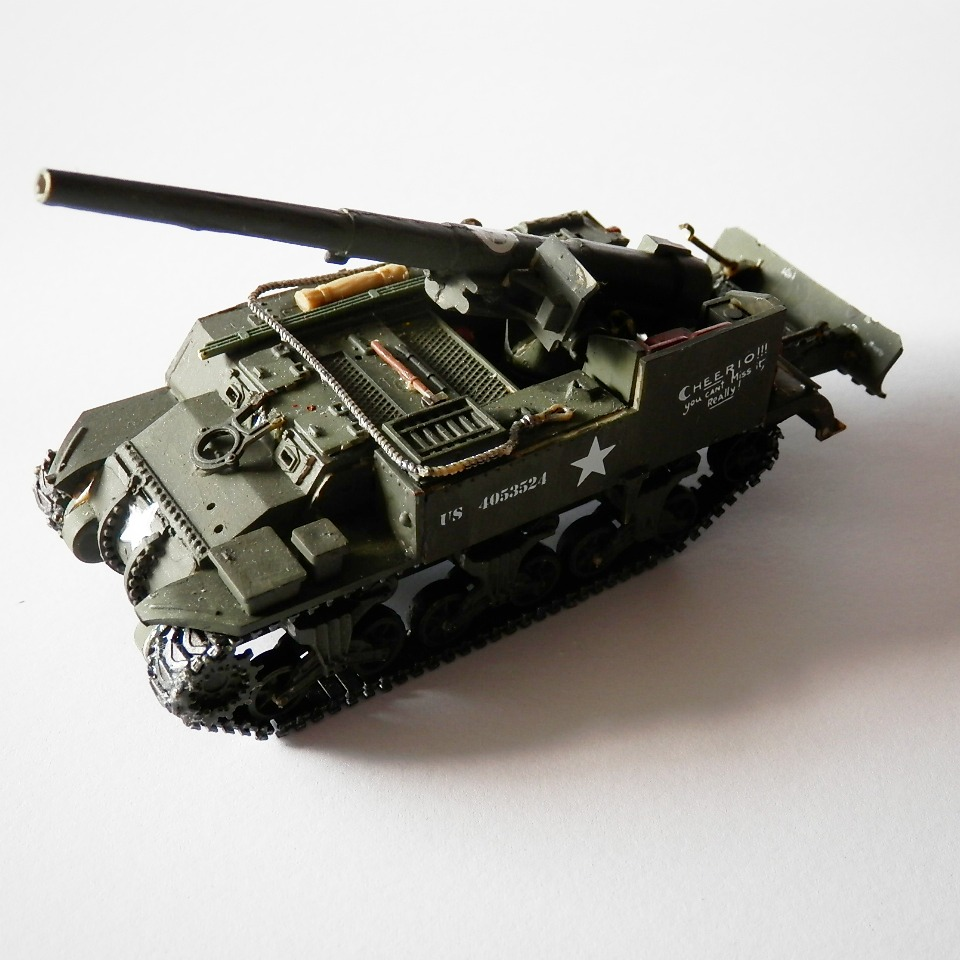
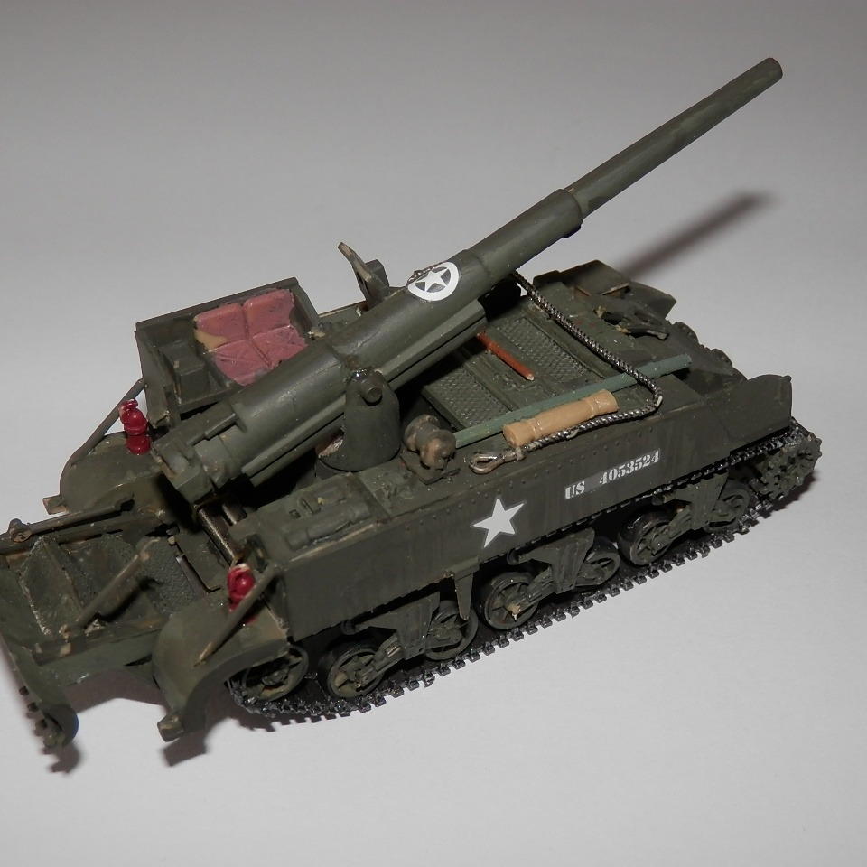

Mezzi militari · scale model archive
M12 gun motor carriage
M12 gun motor carriage — Kit: Matchbox. Scale 1/72 Nice tiny little kit, this M12 gun carrier can be played in World of Tanks and it is quite good

Photo gallery

English description
Scale 1/72
Nice tiny little kit, this M12 gun carrier can be played in World of Tanks and it is quite good
Descrizione italiana
Bel kit minuscolo; questo semovente M12 si può giocare in World of Tanks ed è piuttosto valido.